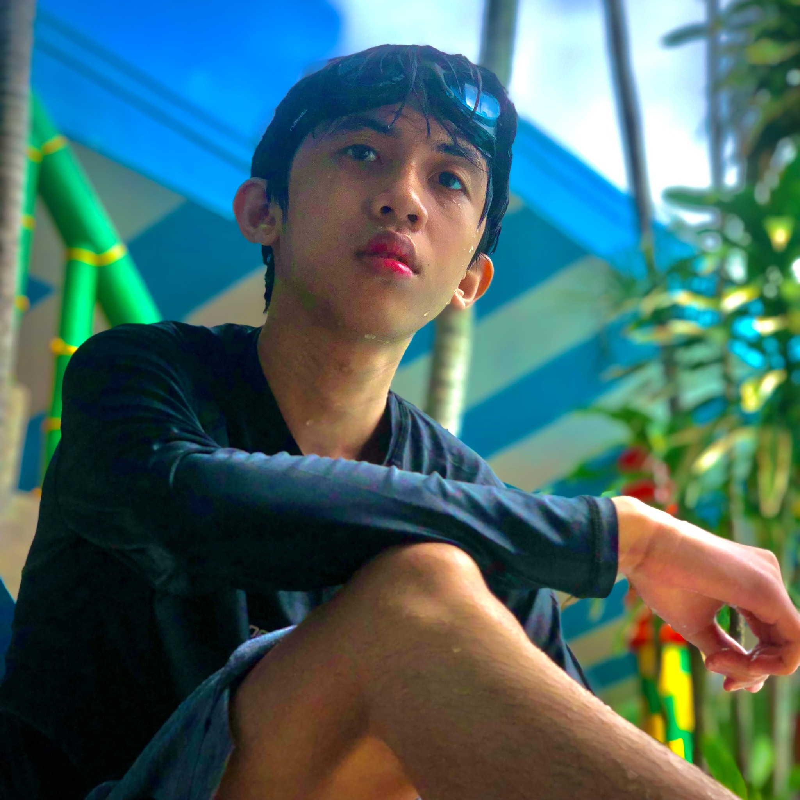

Ang Palumakas by: Kyle Cloma
Sa bawat kabanata ng ating munting pagsasama,
Pilit bang tayo’y ipinagtagpo at itinadhana?
Na tila’y ilaw sa matang dilim at baha sa luha
Sa panlulumong datal ng ating mga alaala.
Sa labis na tingkad ng silaw ng araw gayunpaman,
Hindi mailag ang silakbo’t galimgim sa tauhan
Ngunit lubog ng araw ay kay bigat sa’king looban
Balintuna sa aking isip ang mga kaganapan.
‘Di matanto ang sapantaha ng buhay na wala ka
Marahang patakipsilim ang tanaw sa mga mata
Likop ng alapaap sa himpapawid na nadarama
Habang linilirip ang palumakas sa sinisinta.
Submitted By:

Cloma, Kyle Christian
10-Yukawa